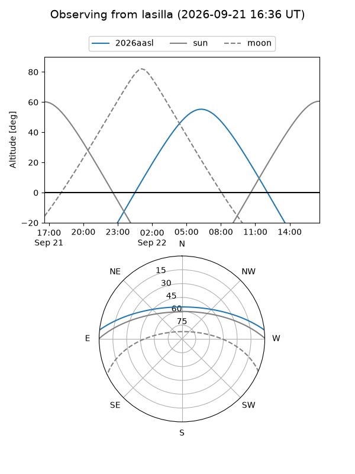
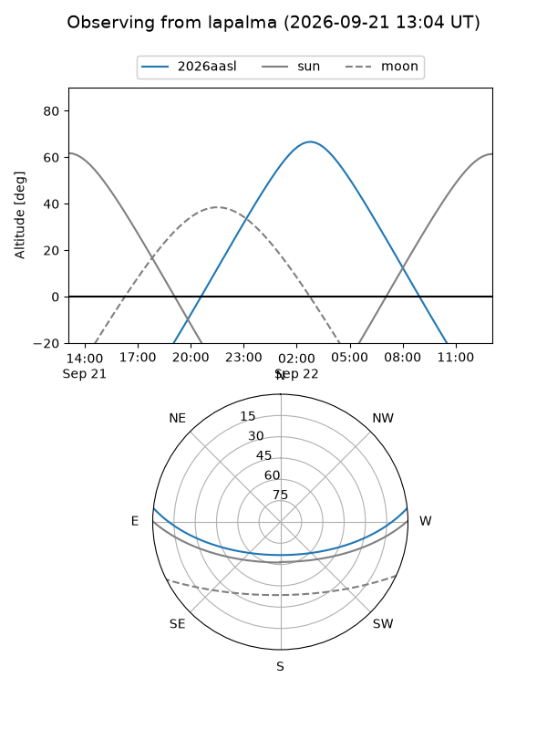
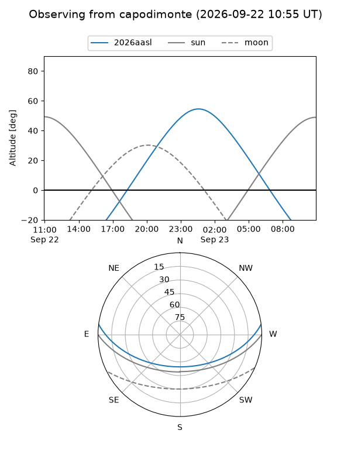
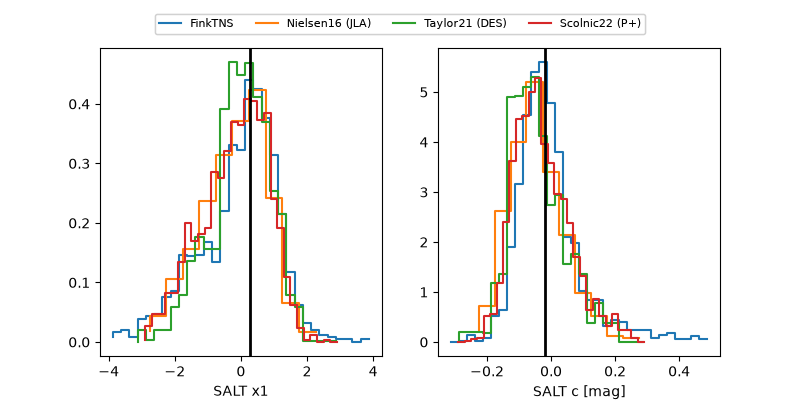

2026aasl
Target 2026aasl at 2026-09-22 14:15
Aliases and brokers:
FINK-ZTF: ztf.fink-portal.org/ZTF26absfken
Lasair-ZTF: lasair-ztf.lsst.ac.uk/objects/ZTF26absfken
ALeRCE-ZTF: alerce.online/object/ZTF26absfken
YSE-PZ: ziggy.ucolick.org/yse/transient_detail/2026aasl
TNS name: wis-tns.org/object/2026aasl
Direct TNS query: direct search
alt names
ZTF26absfken (ztf,fink_ztf)
2026aasl (tns,yse)
Coordinates:
equatorial (ra, dec) = 24.2797,+5.28913
equatorial (HMS+DMS) = 01:37:07.12,+05:17:20.87
galactic (l, b) = (143.4403,-55.75307)
Flags:
TNS type: nan
peak dt: +14.3
Photometry:
last ztfg=20.56, ztfr=20.21
8 ztfg, 7 ztfr detections
Lightcurve
Visibility



Additional plots
